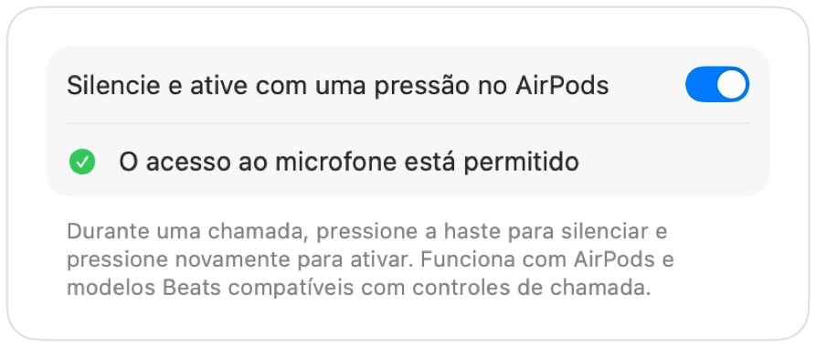

AirPods não silenciam chamadas no Mac? Veja a solução
O macOS permite silenciar chamadas pressionando a haste dos AirPods, mas somente se o aplicativo da chamada for compatível. Muitos não são, incluindo o Chrome e videochamadas em navegadores. Você pressiona, ouve um aviso sonoro de erro, vê a mensagem “Não É Possível Controlar o Microfone” e a chamada continua captando seu áudio.
O Muffle adiciona esse suporte a qualquer aplicativo. Ele recebe a pressão na haste, silencia o microfone do Mac e toca o som de confirmação comum.
Faça a pressão nos AirPods silenciar qualquer app
- 1
Instale o Muffle e permita o acesso ao microfone. O macOS só envia o comando para apps autorizados a usar o microfone.
- 2
Confira se “Silencie e ative com uma pressão no AirPods” está ativado nos Ajustes do Muffle.
- 3
Entre em uma chamada. A pressão só silencia enquanto algum app estiver usando o microfone.
- 4
Pressione a haste uma vez para silenciar e pressione de novo para ativar.

- Fora de chamadas, a pressão continua pausando e reproduzindo músicas como sempre.
- Se os seus AirPods usam uma pressão diferente para controles de chamada, confira a configuração do fone em Ajustes do Sistema.
Perguntas frequentes
Por que meu Mac toca um som de erro quando pressiono os AirPods?
O app onde você está em chamada não suporta a função de silenciar dos AirPods, e o macOS rejeita o comando. Com o Muffle aberto, o gesto silencia o microfone normalmente.
Quais modelos de AirPods suportam o gesto de silenciar?
AirPods Pro, AirPods de 3ª geração ou posterior e AirPods Max, além de modelos Beats com suporte a controles de chamada.